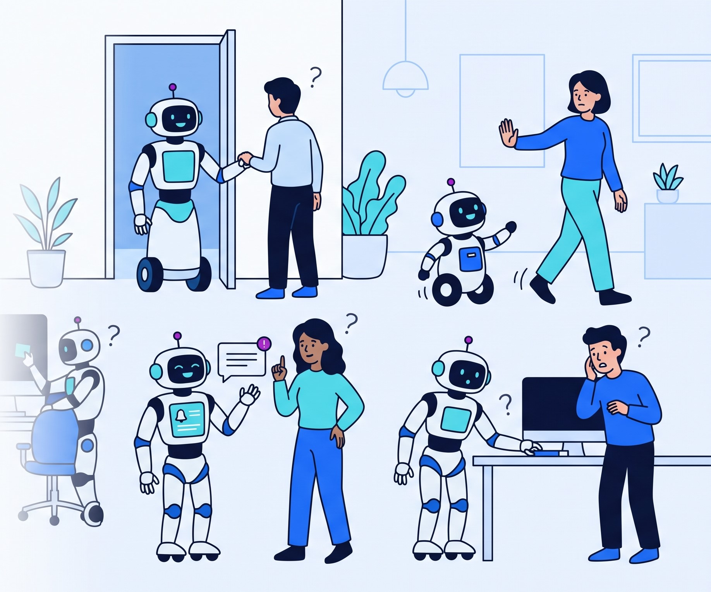
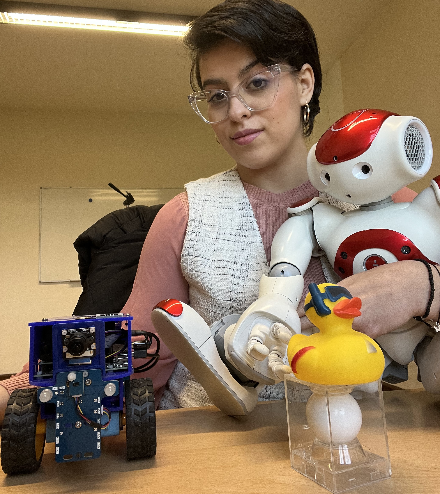

2st Edition
A hands-on workshop exploring how we can move from concerns about psychological and social safety in HRI to the evidence needed to understand, evaluate, and challenge them.

A robot can avoid a collision.
But does that make it safe?
BESAFE 2027
Second Edition
HRI 2027 · Half-day Workshop
Robots are moving beyond controlled environments and into the spaces where we live, work, receive care, and interact with others. Avoiding physical harm is essential — but it is only part of what makes an interaction safe.
A robot may never collide with anyone and still block someone's path. It may continue after a person says no, disclose information they expected to remain private, or adapt its behavior in ways people cannot understand, predict, or correct.
BESAFE returns for its second edition, building on the first BESAFE workshop at RO-MAN 2026, to ask a harder question: what evidence do we actually need before we can make claims about the psychological and social safety of a robot?
At HRI 2027, BESAFE becomes a hands-on Robot Safety Evidence Lab. Participants will work with concrete cases from home and care, social navigation, and adaptive collaboration to investigate what could go wrong, who could be affected, and — most importantly — how we would know.
Together, we will move from concerns to evidence: identifying what should be measured, what data are truly necessary, what should remain private, which safeguards restore human control, and what uncertainty remains before a safety claim can be justified.
From a safety concern
to an evidence case.
Working in small groups, participants will examine concrete HRI safety cases using the Evidence Case Canvas (PDF) .
The Robot Safety Evidence Lab asks a simple question: what would we actually need to know before making a psychological or social safety claim about a robot?
Teams will use an 11-field Evidence Case Matrix to connect a safety concern with robot behavior, human outcomes, evidence, data requirements, safeguards, and uncertainty.
Who is involved, and where?
What could go wrong, for whom, and when?
What did the robot perceive, infer, or decide?
What did it actually do, and how certain was it?
How did the interaction affect the person?
What would support or challenge the claim?
What information do we actually need?
What could collecting that evidence cost?
How could we test the claim?
What happens when something goes wrong?
What remains unknown — and who can intervene?
Teams build an Evidence Case, exchange it with another group to challenge assumptions and missing evidence, and revise it before the final workshop synthesis.
Not just answers.
Better ways to ask the question.
BESAFE 2027 is not designed to produce a universal definition of when a robot is psychologically or socially safe. Instead, we aim to develop a more systematic way of approaching these questions.
Participants will leave with a practical framework for breaking down a safety concern: identifying who may be affected, what the robot is doing, which human outcomes matter, what evidence is needed, how that evidence could be collected, and what safeguards or interventions may be possible.
At the same time, the workshop will stress-test the Evidence Case Matrix itself. By applying it across different HRI cases, we will identify missing categories, unclear relationships, and aspects of psychological and social safety that the matrix does not yet capture.
We are also interested in where the process breaks down: safety concerns for which evidence is difficult to obtain, meaningful measures are missing, safeguards create new trade-offs, or no satisfactory solution is currently apparent.
From an initial concern to evidence, evaluation, and safeguards.
Understanding what works, what is missing, and what needs refinement.
Insights that emerge when the matrix is applied across different HRI cases.
Cases where evidence, measurement, safeguards, or solutions remain unresolved.
Safety beyond physical harm: comfort, agency, consent, trust, and human experience.
What evidence, measures, and evaluations can support or challenge a robot safety claim?
Balancing evidence needs with privacy, autonomy, oversight, and human control.
Refusal, consent, reminders, information sharing, and user control.
Moving beyond collision avoidance toward access, comfort, and socially appropriate behavior.
Adaptation, personalization, transparency, expectations, and the ability to correct robot behavior.
Related interdisciplinary perspectives and emerging HRI safety challenges are welcome.
Important dates
What safety question does your research raise?
We invite papers that explore psychological and social safety in human–robot interaction, particularly work that raises questions about how safety claims can be supported, challenged, or evaluated beyond physical collision avoidance.
Submissions may present empirical research, methods, case studies, deployment experiences, work in progress, or position papers. We especially welcome papers that bring a concrete safety case, open question, or evidence challenge that can inform the Robot Safety Evidence Lab.
During the workshop, selected cases and questions will provide starting points for examining what could go wrong, who could be affected, what evidence would be needed, what should be measured, and what information should remain private.
Contributions do not need to present a finished solution. Unresolved cases, conflicting evidence, and open methodological questions are particularly valuable for the workshop.
University of Houston, USA
Assistant Professor in Human Media Interaction. Research focuses on developing robots to enhance health and quality of life, including social-physical interaction, personalization, and long-term engagement.
Personal PageLund University, Sweden
PhD student in Robotics and Semantic Systems at Lund University. Focuses on smooth, natural, and effective collaboration between humans and robots through mixed-initiative interaction and intention recognition.
Personal PageUniversity of Southern Denmark, DK
PhD student at SDU focusing on human-centered collaborative robotics, specifically human-to-robot trust, transparency, and adaptive robot behavior.
Personal PageUniversity of Bonn, Germany
PhD student in the Humanoid Robots Lab at Bonn. Research focuses on safe and natural navigation behavior of robots in human-centric environments.
Personal PageBielefeld University, Germany
Professor of Interactive Robotics in Medicine and Care. Research: co-constructive learning, explainability, and mental-model mismatch. Proposed role: non-expert learning cases, canvas exercise, and explanation/recovery review.
Personal PageUniversity of Twente, NL
Assistant Professor in Human Media Interaction. Research focuses on developing robots to enhance health and quality of life, including social-physical interaction, personalization, and long-term engagement.
Personal Page
LMU Munich, Germany
Postdoctoral HRI researcher studying socially aware navigation, adaptive behavior, and human responses to robots. Proposed role: navigation cases, perceived safety, agency, and robot/human evidence.
Personal Page